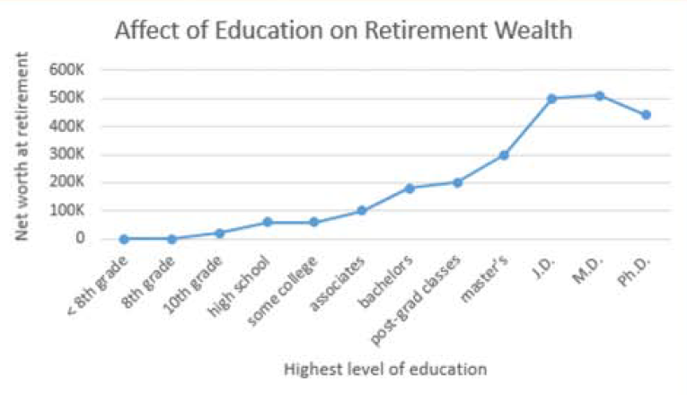
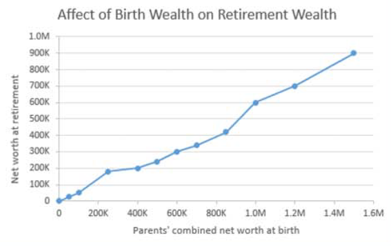

Maybe so, but work migth not cut it. The following
graphs[1] shows various paths to prosperity.
Education
More advanced schooling helps. If you can avoid the crushing
debt of student loans, all the better. Try to find a major that
you´re good at and that is good to you.

Birthright
For accruing wealth, what's even better than education? Being
born wealthy. In the graph below, note the birthright high enders
area able to become more wealthy than education high enders. So
before being born, shop around.
